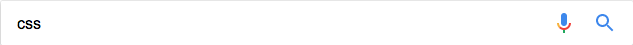
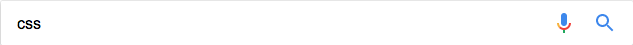

Get Started With Viewing And Changing CSS | Tools for Web ...
https://developers.google.com/web/tools/chrome-devtools/css/
Learn how to use Chrome DevTools to view and change a page's CSS.
Styling - NativeScript docs
https://docs.nativescript.org/ui/styling
Applying CSS styles. The CSS styles can be set on 3 different levels: Application-wide CSS: Applies to every application page. Page-specific CSS: Applies to the page's UI views. Inline CSS: Applies directly to a UI view. If there is CSS declared on different levels—all will be applied. The inline CSS will have the highest ...
Connecticut Spring & Stamping (CSS) | Metal Springs | Progressive ...
CSS is a leading international manufacturer of precision springs and metal shaped solutions. We are a supplier of springs, stampings, machined components, and assemblies.
Homepage - CSS – Center for Security Studies | ETH Zurich
On 18 January 2018, 18:15 - 19:45, the CSS in cooperation with the Center for Eastern European Studies (CESS) at the University of Zurich will be holding an Evening Talk on: „Russia, the West, and the Future of the International Order“. Further Information and Registration ...
Welcome - CSS Industries
About CSS · Contact Us · Terms & Conditions · Privacy Policy · Site Map · Operating Divisions · Berwick Offray · C. R. Gibson · Paper Magic · Investor Relations · SEC Filings · Request Printed Material · Investor FAQs · Download Annual Report · Financial Press Releases · Webcasts / Presentations · Corporate Governance.
SitePoint CSS – Learn CSS, CSS3, Bootstrap, Sass, LESS & more
https://www.sitepoint.com/html-css/css/
Learn CSS - CSS3 online tutorials, learn Bootstrap, Sass & LESS from the experts.
CSS - Little Web Hut
www.littlewebhut.com/css/
CSS Reference and Tutorials, Examples, Code Tester.
CSS Inc
We're Here to Make Your Job Easier. Speed. Compliance. Customer Excellence. CSS Inc., an award-winning screening solutions provider, delivers customized screening services to businesses worldwide. Our industry-leading 360 Advantage approach unifies background screening, drug testing, administrative solutions, ...
CSS International: Oracle Cloud Solutions & ERP Consultant
We offer expert Cloud ERP, Oracle EBS & JDE implementation with complete JD Edwards managed services. Call CSS Oracle Platinum Partner at 800-814-7705.
CSS Code - Interactive Online Tool and Resources - Html-css-js.com
Browse our free online and interactive CSS tool collection.Code editor, cheat sheet, 10 code generators, blog, useful links and more!
CSS International: Oracle Cloud Solutions & ERP Consultant
We offer expert Cloud ERP, Oracle EBS & JDE implementation with complete JD Edwards managed services. Call CSS Oracle Platinum Partner at 800-814-7705.
CSS Code - Interactive Online Tool and Resources - Html-css-js.com
Browse our free online and interactive CSS tool collection.Code editor, cheat sheet, 10 code generators, blog, useful links and more!
Learn HTML - HTML & CSS Syntax Course | Udacity
https://www.udacity.com/course/html-and-css-syntax--ud001
In this HTML course, you'll learn the fundamentals web development, HTML and CSS syntax, and professional problem-solving techniques using Developer Tools.
CSS Basics | edX
https://www.edx.org/course/css-basics-w3cx-css-0x-0
Learn how to take your Web pages from bland to bold with the power of CSS styling.
Knockout : The "css" binding
knockoutjs.com/documentation/css-binding.html
The "css" binding. Purpose. The css binding adds or removes one or more named CSS classes to the associated DOM element. This is useful, for example, to highlight some value in red if it becomes negative. (Note: If you don't want to apply a CSS class but instead want to assign a style attribute value directly, see the style ...
CSS Reference - A free visual guide to CSS
CSS Reference is a free visual guide to CSS. It features the most popular properties, and explains them with illustrated and animated examples.
CSS Courses on Treehouse
https://teamtreehouse.com/library/topic:css
Become an expert at CSS with our interactive tutorials.
CSS - Quackit Tutorials
https://www.quackit.com/css/
CSS (Cascading Style Sheets) allows you to apply styles to web pages. More importantly, CSS enables you to do this independently of the HTML that makes up each web page. ... Here, you'll find CSS tutorials, code examples, and CSS reference material.
CSS Tutorial
https://www.tutorialspoint.com/css/
CSS is used to control the style of a web document in a simple and easy way. CSS is the acronym for "Cascading Style Sheet". This tutorial covers both the versions CSS1,CSS2 and CSS3, and gives a complete understanding of CSS, starting from its basics to advanced concepts.
CSS | Skillcrush
https://skillcrush.com/2012/04/03/css/
While HTML tells the browser what different parts of the page are, CSS says what those pieces should look like. For example, p means paragraph in HTML. If we wanted to make all of our paragraphs pink and bold, we'd do something like: p { color:pink; font-weight:bold; }. CSS is written in a plain text editor ...
CSS Reference | Codrops
https://tympanus.net/codrops/css_reference/
An extensive CSS reference with all the important CSS properties and info to learn CSS from the basics.
The College of St. Scholastica | Home Page
The College of St. Scholastica is an independent private college based in Duluth, Minnesota with campuses across the state. St. Scholastica offers undergraduate, graduate, and certificate programs both online and on campus.
CSS Weekly — Weekly e-mail roundup of latest CSS articles, tutorials ...
Weekly e-mail roundup of latest css articles, tutorials, tools and experiments.
CSS Coding Standards – Make WordPress Core
https://make.wordpress.org/core/handbook/best-practices/coding-standards/css/
Like any coding standard, the purpose of the WordPress CSS Coding Standards is to create a baseline for collaboration and review within various aspects of the WordPress open source project and community, from core code to themes to plugins. Files within a project should appear as though created by a single entity.
CSS (Cascading Style Sheet) Definition
https://techterms.com/definition/css
Stands for "Cascading Style Sheet." Cascading style sheets are used to format the layout of Web pages. They can be used to define text styles, table sizes, and other aspects of Web pages that previously could only be defined in a page's HTML. CSS helps Web developers create a uniform look across several pages of a ...
GitHub - airbnb/css: A mostly reasonable approach to CSS and Sass.
https://github.com/airbnb/css
A mostly reasonable approach to CSS and Sass. Contribute to css development by creating an account on GitHub.
#css hashtag on Twitter
https://twitter.com/hashtag/css?lang=en
On Jan 6 @WomenWhoCode tweeted: "Get your new year started by learning a .." - read what others are saying and join the conversation.
CSS · Bootstrap
https://getbootstrap.com/css/
Overview. Get the lowdown on the key pieces of Bootstrap's infrastructure, including our approach to better, faster, stronger web development. HTML5 doctype. Bootstrap makes use of certain HTML elements and CSS properties that require the use of the HTML5 doctype. Include it at the beginning of all your projects. Copy.
CSS Basics | Intro to CSS | Intro to HTML/CSS: Making webpages ...
https://www.khanacademy.org/computing/computer.../html-css/intro...css/p/css-basics
Read and learn for free about the following scratchpad: CSS Basics.
css-loader - Webpack
https://webpack.js.org/loaders/css-loader/
If, for one reason or another, you need to extract CSS as a plain string resource (i.e. not wrapped in a JS module) you might want to check out the extract-loader. It's useful when you, for instance, need to post process the CSS as a string. webpack.config.js { test: /\.css$/, use: [ 'handlebars-loader', // handlebars loader expects ...
CSS Fundamentals | SoloLearn: Learn to code for FREE!
https://www.sololearn.com/Course/CSS/
Our CSS tutorial is a learning game that will teach you how to control the style and layout of websites. Learn CSS while going through carefully selected content followed by our interactive quizzes and checkpoints. Complete a series of entertaining exercises and practice while filling out actual CSS templates.
CSS Support Guide for Email Clients | Campaign Monitor
https://www.campaignmonitor.com/css/
A complete breakdown of the CSS support for the most popular mobile, web and desktop email clients on the planet.
Css — Smashing Magazine
https://www.smashingmagazine.com/category/css/
CSS is the language for styling websites, including their colors, layouts, and typography. With CSS, you can propagate styles to your HTML components, ensuring a consistent design across all types of devices, browsers, and operating systems. We highly recommend Heydon Pickering's introduction to two ...
Learn CSS | Codecademy
https://www.codecademy.com/learn/learn-css
Codecademy is the easiest way to learn how to code. It's interactive, fun, and you can do it with your friends.
Eric Meyer: CSS - Meyerweb
https://meyerweb.com/eric/css/
CSS Tests: A fairly large collection of test files I've accumulated over the years. The test subjects run the gamut from CSS1 to CSS3, and are rarely if ever documented. Feel free to explore to your heart's content. Note: Eric is not responsible for anything that happens to your browser or your happiness with it as a result of your ...
CSS Beginner Tutorial | HTML Dog
www.htmldog.com › Tutorials › CSS
Like the HTML Beginner Tutorial, the CSS Beginner Tutorial assumes that you know as much about CSS as you do about the cumulative effects of sea squirt discharge on the brain chemistry of Germanic ammonites. The purpose of this guide is to teach the bare essentials - just enough to get started. The CSS Intermediate ...
A List Apart Articles about CSS
https://alistapart.com/topic/css
Responsive and multi-device design. Separating presentation from structure and behavior. Media queries and beyond. Types of web layouts. CSS3 animations. Replacing JavaScript with CSS3. Crafting a print style sheet. CSS support: browser bugs and workarounds. CSS in networked devices, mobile and otherwise.
Guide to Cascading Style Sheets - The Web Design Group
www.htmlhelp.com/reference/css/
All with the power and flexibility of Web style sheets. ... Descriptions of the various properties available in Cascading Style Sheets, level 1. ... Check the syntax and style of your Cascading Style Sheets with this CSS lint.
CSS Zen Garden: The Beauty of CSS Design
A demonstration of what can be accomplished visually through CSS-based design.
Cascading Style Sheets - Wikipedia
https://en.wikipedia.org/wiki/Cascading_Style_Sheets
Cascading Style Sheets (CSS) is a style sheet language used for describing the presentation of a document written in a markup language. Although most often used to set the visual style of web pages and user interfaces written in HTML and XHTML, the language can be applied to any XML document, including plain XML, ...
CSS-Tricks
Tips, Tricks, and Techniques on using Cascading Style Sheets.
.css() | jQuery API Documentation
api.jquery.com › Manipulation › Style Properties
The .css() method is a convenient way to get a computed style property from the first matched element, especially in light of the different ways browsers access most of those properties (the getComputedStyle() method in standards-based browsers versus the currentStyle and runtimeStyle properties in Internet Explorer prior ...
Learn to style HTML using CSS - Learn web development | MDN
https://developer.mozilla.org/en-US/docs/Learn/CSS
Cascading Stylesheets — or CSS — is the first technology you should start learning after HTML. While HTML is used to define the structure and semantics of your content, CSS is used to style it and lay it out. So for example, you can use CSS to alter the font, color, size, and spacing of your content, split it ...
CSS | MDN
https://developer.mozilla.org/en-US/docs/Web/CSS
Cascading Style Sheets (CSS) is a stylesheet language used to describe the presentation of a document written in HTML.
Apply for College Financial Aid – CSS Profile – The College Board
https://cssprofile.collegeboard.org/
Apply for student grants and college financial aid using one application form. CSS Profile collects information used for financial aid decisions.
Cascading Style Sheets
https://www.w3.org/Style/CSS/Overview.en.html
What is CSS? Cascading Style Sheets (CSS) is a simple mechanism for adding style (e.g., fonts, colors, spacing) to Web documents. These pages contain information on how to learn and use CSS and on available software. They also contain news from the CSS working group.
CSS Introduction - W3Schools
https://www.w3schools.com/css/css_intro.asp
CSS stands for Cascading Style Sheets. CSS describes how HTML elements are to be displayed on screen, paper, or in other media. CSS saves a lot of work. It can control the layout of multiple web pages all at once. External stylesheets are stored in CSS files.
CSS Reference - W3Schools
https://www.w3schools.com/cssref/
Well organized and easy to understand Web building tutorials with lots of examples of how to use HTML, CSS, JavaScript, SQL, PHP, and XML.
CSS Layout - The position Property - W3Schools
https://www.w3schools.com/css/css_positioning.asp
HTML elements are positioned static by default. Static positioned elements are not affected by the top, bottom, left, and right properties. An element with position: static; is not positioned in any special way; it is always positioned according to the normal flow of the page: This < div > element has position: static;. Here is the CSS ...
You visited this page on 1/8/18.
CSS Tutorial - W3Schools
https://www.w3schools.com/css/
CSS is a language that describes the style of an HTML document. CSS Describes how HTML elements should be displayed.
CSS Backgrounds · CSS How to · CSS Introduction · CSS Syntax
 
